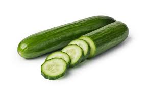
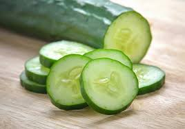
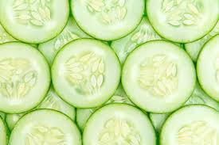
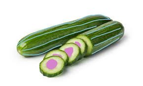
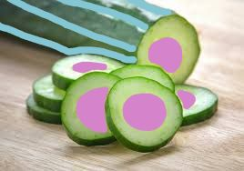
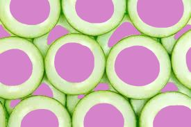

Frankly Shabby Cucumbers
we all know about frank cucumbers, and we all know about shabby cucumbers, but here I present the new, never seen before:
FRANKLY SHABBY CUCUMBERS!!!
here are some pictures of cucumbers as I know you have probably not seen them before:



and here are the new frank and shabby cucumbers, also known as frankly shabby cucumbers:



So what is diffferent about frankly shabby cucumbers?
- As you can see the frankly shabby cucumbers have a pink centre with blue lines running along the cucumber.